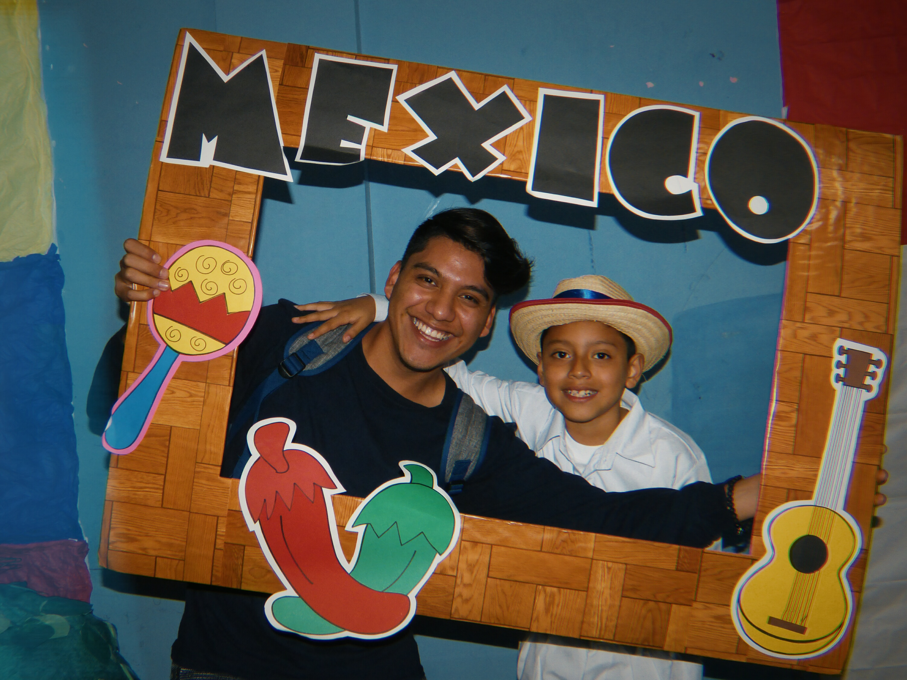
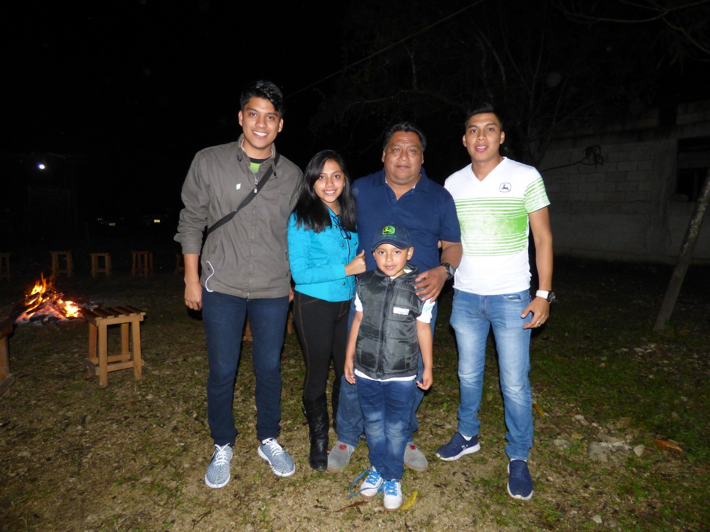
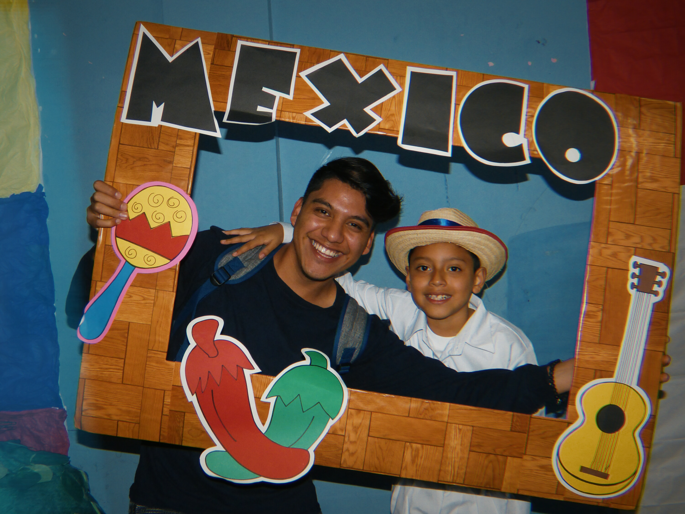
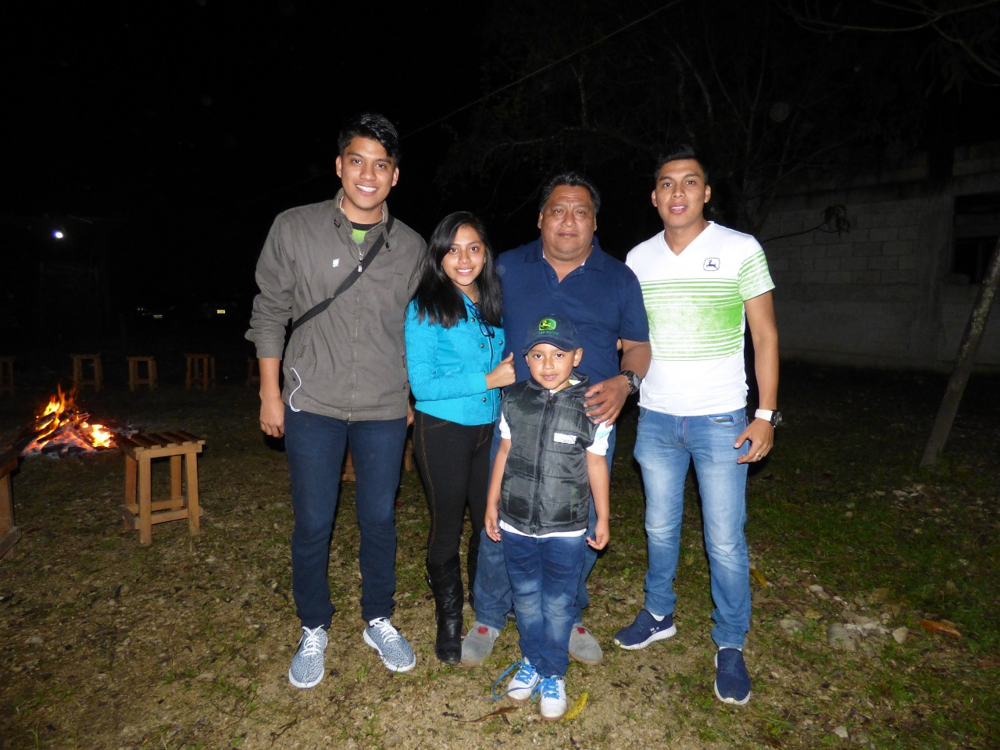

FUTURO DE 5 AÑOS
Personal
•En lo personal me veo mas maduro, con mas confianza en mi mismo, con un caracter mejor formado y preparado para seguir creciendo idependientemente las adversidades.
.
Familiar
• En lo familiar me veo disfrutanso con mi familia mas momentos de viajes, teniendo aun mas aventuras y juntarlas al albun de experiencias vividas como hasta ahora, y entrando en la categoria de familia para mi tambien entras mis amistades a quienes valoromucho y me veo teniendo mas experiencias con mis amigos.
.
Laboral
• En lo laboral me veo ya graduado listo para poder trabajar en el ambito de la programacion, ademas apoyando a mi papa en empresa.
FUTURO DE 10 AÑOS
Personal
• En 10 años en lo personal me veo haciendo lo que me gusta con las personas que mas aprecio, teniendo una empresa propia, pero aun asi teniendo muchos hobbies como en la actualidad, como lo es el Tennis de Messa, los Video Juegos, La produccion de Fotografias y Videos tanto como la creacion como en la edicion y como ultimo pero no menos importante, ayudando a las personas que lo necesiten y tenga a mi alcance de la forma que pueda.
.
Familiar
• En 10 año en el ambito familiar me veo aprovechando los momentos en familia lo mas que se pueda ya que vida solo hay una y de nada sirve vivir toda la vida ahorrando para cuando seas viejo no poderlos disfrutar, asi que en el ambito familiar me veo mas tratando de buscar un equilibrio para poder pasar tiempo con mi familia.
.
Laboral
• En 10 años en el ambito laboral como ya lo mencione en el ambito Familiar me veo trabajando en lo que mas me gusta en una empresa dirigida por mi ya sea por que sea yo el dueño o en compañia de mi familia.
Menú
Curriculum
Personaje Favorito
Tutorial

 


